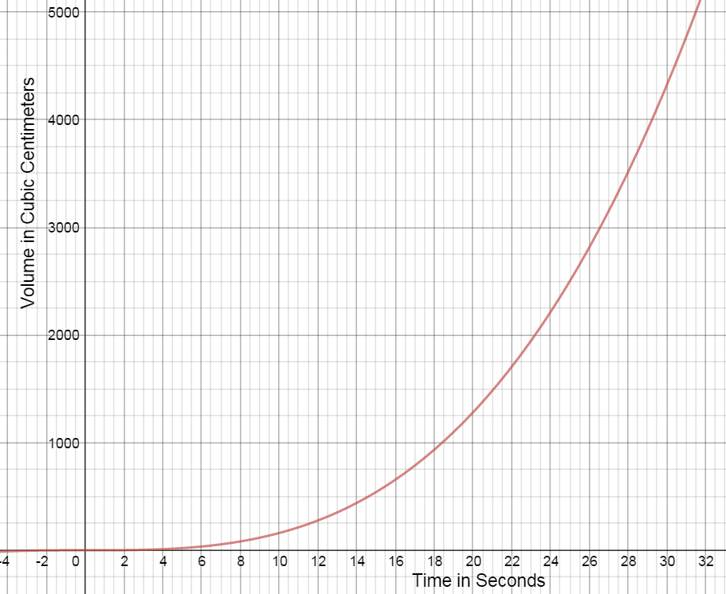

1.3 Definition of the Derivative
Limit Definition of the Derivative of a Function: 4 Step ProcessGiven $f(x)$,
$f'(x)=\mathop {\lim }\limits_{h \to 0} \frac{{f\left( {x + h} \right) - f\left( x \right)}}{h}$
Step 1: Find $f\left( {x + h} \right)$
Step 2: Find $f\left( {x + h} \right) - f\left( x \right)$
Step 3: Find $\frac{{f\left( {x + h} \right) - f\left( x \right)}}{h}$
Step 4: Find $\mathop {\lim }\limits_{h \to 0} \frac{{f\left( {x + h} \right) - f\left( x \right)}}{h}$
1.3 Video
-
Use the limit definition of the derivative to find $f'\left( x \right)$, given $f\left( x \right) = \;5{x^2} + 2x - 8.$
Step 1
$f(x + h) = 5{(x + h)^2} + 2(x + h) - 8$
$f(x+h)= 5({x^2} + 2xh + {h^2}) + 2x + 2h - 8$
$f(x+h)=5{x^2} + 10xh + 5{h^2} + 2x + 2h - 8$
Step 2
$f(x + h) - f(x) = \left( {5{x^2} + 10xh + 5{h^2} + 2x + 2h - 8} \right) - \left( {5{x^2} + 2x - 8} \right)$
$f(x+h)-f(x)= 10xh + 5{h^2} + 2h$
Step 3
$\frac{{f(x + h) - f(x)}}{h} = \frac{{10xh + 5{h^2} + 2h}}{h}$
$ \frac{{f(x + h) - f(x)}}{h} = \frac{{10xh}}{h} + \frac{{5{h^2}}}{h} + \frac{{2h}}{h}$
$\frac{{f(x + h) - f(x)}}{h} = 10x + 5h + 2$
Step 4
$\mathop {\lim }\limits_{h \to 0} (10x + 5h + 2) = 10x + 5(0) + 2 = 10x + 2$
Therefore, the slope of the tangent line for any given $x$ is $f'(x) = 10x + 2.$
- Write the equation of the tangent line at x=2.
Point $\quad f(2)=16\quad \quad (2,16)$
Slope $\quad {m_{tan}} = f'(2) = 10(2) + 2 = 20 + 2 = 22$
$y-y_1=m\left(x-x_1\right)\\ $
$y - 16 = 22(x - 2)$
$y - 16 = 22x - 44$
$y = 22x - 28$
-
Use the limit definition of the derivative to find $f'\left( x \right)$, given $f(x) = - 4{x^2} + x + 2.$
Step 1
$f(x+h)=-4{{(x+h)}^{2}}+(x+h)+2$
$f(x+h)=-4({{x}^{2}}+2xh+{{h}^{2}})+x+h+2$
$f(x+h)=-4{{x}^{2}}-8xh-4{{h}^{2}}+x+h+2$
Step 2
$f(x+h)-f(x)=\left( -4{{x}^{2}}-8xh-4{{h}^{2}}+x+h+2 \right)-\left( -4{{x}^{2}}+x+2 \right)$
$f(x+h)-f(x)=-8xh-4{{h}^{2}}+h$
Step 3
$\frac{f(x+h)-f(x)}{h}=\frac{-8xh-4{{h}^{2}}+h}{h}$
$\frac{f(x+h)-f(x)}{h}=\frac{-8xh}{h}-\frac{4{{h}^{2}}}{h}+\frac{h}{h}$
$\frac{f(x+h)-f(x)}{h}=-8x-4h+1$
Step 4
$\mathop {\lim }\limits_{h \to 0} (-8x-4h+1)=-8x-4(0)+1=-8x+1$
Therefore, the slope of the tangent line for any given $x$ is ${f}'(x)=-8x+1.$
Write the equation of the tangent line at x = 1.
Point $\quad f(1)=-1\quad \quad (1, - 1)$
Slope $\quad {m_{\tan}}= f'(1) =- 8(1) + 1 = - 8 + 1 = - 7$
$y-y_1=m\left(x-x_1\right)\\ $
$y +1 = -7(x - 1)$
$y +1 = -7x +7$
$y = -7x +6$
-
Use the limit definition of the derivative to find $f'\left( x \right)$, given $f\left( x \right) = \;{x^2}\; - 3x - 2.$
Step 1
$f(x + h) = {(x + h)^2} - 3(x + h) - 2$
$f(x + h) = {x^2} + 2xh + {h^2} - 3x - 3h - 2$
Step 2
$f(x + h) - f(x) = \left( {{x^2} + 2xh + {h^2} - 3x - 3h - 2} \right) - \left( {{x^2}\; - 3x - 2} \right)$
$f(x+h)-f(x)= 2xh + {h^2} - 3h$
Step 3
$\frac{{f(x + h) - f(x)}}{h} = \frac{{2xh + {h^2} - 3h}}{h}$
$ \frac{{f(x + h) - f(x)}}{h} = \frac{{2xh}}{h} + \frac{{{h^2}}}{h} - \frac{{3h}}{h}$
$\frac{{f(x + h) - f(x)}}{h} = 2x + h - 3$
Step 4
$\mathop {\lim }\limits_{h \to 0} 2x + h - 3 = 2x + (0) - 3 = 2x - 3$
Therefore, the slope of the tangent line for any given $x$ is $f'(x) = 2x - 3.$
Write the equation of the tangent line at x = -1.
Point $\quad f(-1)=2\quad \quad (-1, 2)$
Slope $\quad {m_{\tan}}= f'(-1) = 2(-1)-3 = - 2 - 3 = - 5$
$y-y_1=m\left(x-x_1\right)\\ $
$y - 2 = -5(x + 1)$
$y - 2 = -5x - 5$
$y = -5x -3$
-
A decorative birthday balloon is being filled with helium. The table shows the volume of the helium in the balloon at 3 second intervals for 30 seconds.
t(seconds) V (cubic centimeters) 0 0 3 4.2 6 33.5 9 113.0 12 267.9 15 523.3 18 904.3 21 1436.0 24 2143.6 27 3052.1 30 4186.7 This function can be approximated by the equation $f(x) = 0.16{x^3} + 0.0003{x^2} - 0.007x + 0.0161$ (graphed below). 
-
What are the dependent and independent variables for this problem? In what units is the rate of changed expressed?
The dependent variable is volume, in $cm^3.$
The independent variable is time, in seconds.
The rate of change is measured in $cm^3$ per second $({}^{c{{m}^{3}}}/{}_{\sec }).$
-
A secant line is a line that intersects two points on a curve. Draw a secant line on the graph for each of the following. Calculate the slope of the secant line for each of the following intervals.
- 21 s to 30 s
$\left(21,1436\right)\;\left(30,4186.7\right)\;\;{m_{secant}}\approx306\;cm^3/sec$
- 21 s to 27 s
$\left(21,1436\right)\;\left(27,3052.1\right)\;\;{m_{secant}}\approx269\;cm^3/sec$
- 21 s to 24 s
$\left(21,1436\right)\;\left(24,2143.6\right)\;\;{m_{secant}}\approx236\;cm^3/sec$
- 21 s to 30 s
-
What does the slope of the secant line represent?
The slope of the secant represents the average rate of change in the volume of helium in the balloon over the time interval.
-
A tangent line is a line that intersects a curve at only one point. Draw a tangent line at the point on the graph corresponding to 21 s and estimate the slope of this line.
Answers will vary. At 21 seconds, the volume of the helium balloon is increasing at a rate of approximately $208 \;cm^3/sec.$
-
What does the slope of the tangent line represent?
The slope of the tangent line represents the instantaneous rate of change of the volume at a given time. At 21 seconds, the volume of the helium balloon is increasing at a rate of approximately $208 \;cm^3/sec.$
-
Compare the secant slopes to the slope of the tangent line. What do you notice?
As the time interval becomes smaller between 21 sec and the end of the interval, the slope of the secant line gets closer in value to the slope of the tangent line, which is the rate of change at exactly 21 seconds.
Source http://mysite.science.uottawa.ca/iabde083/ch01.pdf
-
-
Use the limit definition of the derivative to find $f'(x)$ for$f(x)={{x}^{2}}$.
$f\left( x+h \right)={{(x+h)}^{2}}={{x}^{2}}+2xh+{{h}^{2}}$
${f}'(x)=\underset{h\rightarrow0}{lim}\frac{f(x+h)-f(x)}{h}$
$=\underset{h\rightarrow0}{lim}\frac{\left( {{x}^{2}}+2xh+{{h}^{2}} \right)-\left( {{x}^{2}} \right)}{h}$
$=\underset{h\rightarrow0}{lim}\left( \frac{2xh+{{h}^{2}}}{h} \right)$
$=\underset{h\rightarrow0}{lim}\,\left( 2x+h \right)=2x $
${f}'(x)=2x$
-
Use the limit definition of the derivative to find$f'(x)$ for $f(x)={{x}^{3}}$.
$f(x+h)=(x+h)({{x}^{2}}+2xh+{{h}^{2}}) $
$=\left( {{x}^{3}}+2{{x}^{2}}h+x{{h}^{2}} \right)+\left( {{x}^{2}}h+2x{{h}^{2}}+{{h}^{3}} \right)$
$={{x}^{3}}+3{{x}^{2}}h+3x{{h}^{2}}+{{h}^{3}}$
$\underset{h\rightarrow0}{lim}\frac{f(x+h)-f(x)}{h}$
$=\underset{h\rightarrow0}{lim}\frac{\left( {{x}^{3}}+3{{x}^{2}}h+3x{{h}^{2}}+{{h}^{3}} \right)-\left( {{x}^{3}} \right)}{h}$
$=\underset{h\rightarrow0}{lim}\left( \frac{3{{x}^{2}}h+3x{{h}^{2}}+{{h}^{3}}}{h} \right) $
$ =\underset{h\rightarrow0}{lim}\left( 3{{x}^{2}}+3xh+{{h}^{2}} \right)$
$=3{{x}^{2}}+3x(0)+{{(0)}^{2}}=3{{x}^{2}}$
${f}'(x)=3{{x}^{2}}$
-
Use the limit definition of the derivative to find $f'(x)$ for $f(x)={{x}^{4}}$.
(Hint:${{\left( x+h \right)}^{4}}=\ {{x}^{4}}+4{{x}^{3}}h+6{{x}^{2}}{{h}^{2}}+4x{{h}^{3}}+{{h}^{4}}$)
$f\left( x+h \right)={{\left( x+h \right)}^{4}}=\ {{x}^{4}}+4{{x}^{3}}h+6{{x}^{2}}{{h}^{2}}+4x{{h}^{3}}+{{h}^{4}}$
$\underset{h\rightarrow0}{lim} \frac{f(x+h)-f(x)}{h}$
$=\underset{h\rightarrow0}{lim}\frac{\left( {{x}^{4}}+4{{x}^{3}}h+6{{x}^{2}}{{h}^{2}}+4x{{h}^{3}}+{{h}^{4}} \right)-\left( {{x}^{4}} \right)}{h}$
$=\underset{h\rightarrow0}{lim} \frac{4{{x}^{3}}h+6{{x}^{2}}{{h}^{2}}+4x{{h}^{3}}+{{h}^{4}}}{h}$
$=\underset{h\rightarrow0}{lim} \left( 4{{x}^{3}}+6{{x}^{2}}h+4x{{h}^{2}}+{{h}^{3}} \right)$
$=4{{x}^{3}}+6{{x}^{2}}(0)+4x{{(0)}^{2}}+{{(0)}^{3}}$
$=4{{x}^{3}}$
${f}'(x)=4{{x}^{3}}$
-
Complete the table.
$f(x)$ $f'(x)$ $x^2$ $x^3$ $x^4$ -
Based on your work in (a), (b), and (c), what do you conjecture is the derivative of $f(x)={{x}^{5}}\quad$? of $f(x)={{x}^{13}}$?
${f}'(x)=5{{x}^{4}}$
${f}'(x)=13{{x}^{12}}$
-
Conjecture a formula for the derivative of $f(x)={{x}^{n}}$ that holds for any positive integer n. That is, given $f(x)={{x}^{n}}$ where n is a positive integer, what do you think the formula for $f'(x)$ is?
$f'(x)=nx^{n-1}$
Active Calculus by Matthew Boelkins is licensed under a Creative Commons Attribution- NonCommercial-ShareAlike 4.0 International License. Based on a work at http://scholarworks.gvsu.edu/books/10/.
1.3 Lecture
1.3 Group Work
1.3 Additional Practice
Functions of the form $f(x)={{x}^{n}}$, where n = 1,2,3, . . ., are often called power functions.